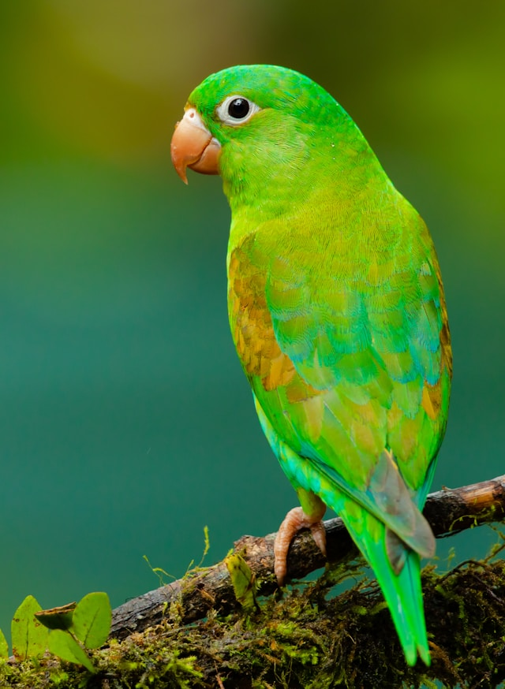

Webserv Project
Custom HTTP/1.1 server implementation running on port 4444.
Testing external image loading from Wikipedia:

Testing local static file serving:

Additional external resource test from Flickr:

Local bird image resource:
